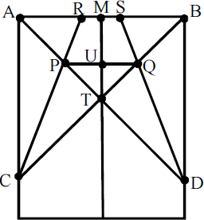

Uma professora do ensino fundamental resolveu utilizar, em suas aulas, a construção de um avião de papel para explorar alguns conceitos e propriedades da geometria plana. Utilizando uma folha de papel retangular, os estudantes deveriam começar fazendo as dobras na folha ao longo dos segmentos de reta indicados na figura ao lado.
As seguintes condições, segundo instruções da professora, devem ser satisfeitas:
A partir da análise da figura, um estudante afirmou o seguinte: O triângulo PQD é obtusângulo
PORQUE
o triângulo PQT é equilátero.
Com relação ao que foi afirmado pelo estudante, assinale a opção correta.